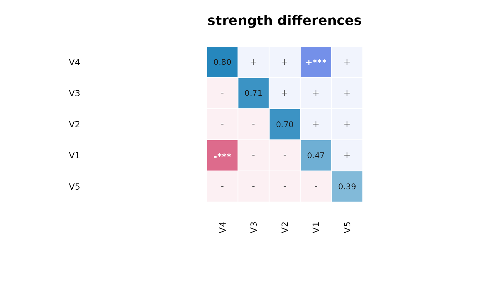
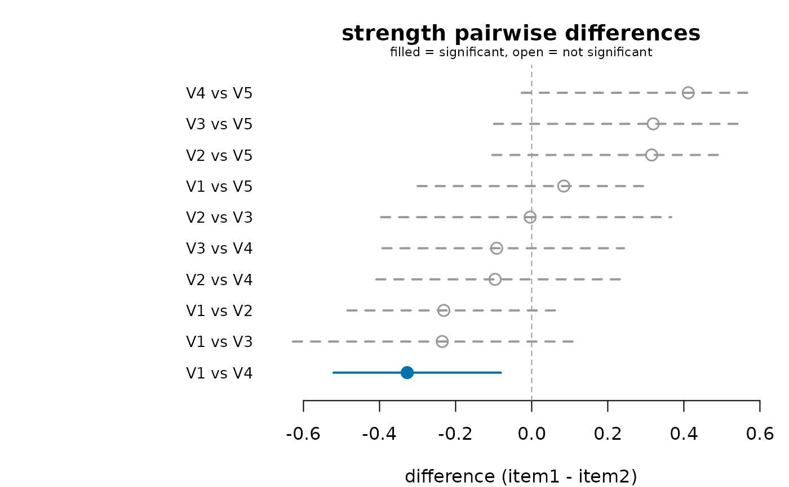

Test differences between edges or between centralities within a network
Source:R/bootstrap.R, R/plot.R
difference_test.Rddifference_test() tests whether pairs of edges, or pairs of nodes on one
centrality measure, differ within a single network. It uses the bootstrapped
difference test (Epskamp, Borsboom & Fried, 2018), which computes the
difference of a pair in every bootstrap resample and treats the pair as
different when the resulting interval excludes zero, that is, when the
difference exceeds what sampling variation alone would produce. Interpreting
one edge as stronger than another, or one node as more central than another,
requires such a difference.
The function reads the resampled values stored by net_boot() and tests
every pair of edges (type = "edge") or every pair of nodes on one
bootstrapped centrality measure.
For each pair it returns the observed difference, the percentile interval of the bootstrapped difference, a two-sided bootstrap p-value and whether the interval excludes zero.
The test compares estimates within one network. To compare the same edge
or the global strength between two groups, use net_compare(); for the
interval of each edge or centrality on its own, use net_boot().
Arguments
- boot
A
psychnet_bootstrapobject fromnet_boot().- type
What to compare:
"edge"(default) or one centrality measure bootstrapped bynet_boot(), such as"strength"or"expected_influence".- ci
Confidence level of the difference interval, a number in (0, 1). Default: the level used by
boot.- p_adjust
Multiplicity adjustment for the p-values, any method of
stats::p.adjust(). Default"none".- x
A
psychnet_differencedata frame fromdifference_test().- style
For
plot():"box"(default) or"forest".- ...
Unused.
Value
A data frame of class psychnet_difference, one row per pair, with
columns item1, item2, value1, value2 (the two observed values),
obs_diff (value1 - value2), lower, upper (percentile interval of
the bootstrapped difference), p_value and significant (the interval
excludes zero). Edges are labelled A--B, or A->B for a directed
estimator. plot() draws the table and returns x invisibly.
Details
The p-value of a pair is twice the smaller of the shares of resamples in
which the difference is positive or negative, with resamples in which it is
exactly zero split evenly between the two, and capped at 1. significant
is decided by the interval at level ci and is not changed by p_adjust,
which adjusts only p_value.
Functions
plot(psychnet_difference): The matrix of pairwise differences used bybootnet: items on both axes, ordered by observed value, with that value on the diagonal. An off-diagonal cell is filled when the pair differs (blue when the row item is larger, red when it is smaller), and every cell prints the sign of the difference (+or-), followed by stars for a significant pair.style = "forest"instead draws one row per pair: the difference with its interval and a reference line at zero, significant pairs as filled points on solid segments and the others as open points on dashed segments.
Conditions
psychnet_bad_input when boot is not a psychnet_bootstrap object,
type is not a bootstrapped quantity, ci or p_adjust is invalid, or
fewer than two items can be compared.
References
Epskamp, S., Borsboom, D., & Fried, E. I. (2018). Estimating psychological networks and their accuracy: A tutorial paper. Behavior Research Methods, 50(1), 195-212. doi:10.3758/s13428-017-0862-1
See also
net_boot() for the resamples; net_compare() for differences
between groups.
Examples
set.seed(1)
x <- matrix(stats::rnorm(150 * 5), 150, 5) %*% chol(0.4^abs(outer(1:5, 1:5, "-")))
colnames(x) <- paste0("V", 1:5)
# method = "pcor" and n_boot = 50 keep this example fast; a real analysis
# uses the "glasso" default and n_boot >= 1000.
bs <- net_boot(x, method = "pcor", n_boot = 50, cores = 1)
dt <- difference_test(bs, type = "strength")
dt
#> item1 item2 value1 value2 obs_diff lower upper p_value
#> 1 V1 V2 0.4706062 0.7016822 -0.231076055 -0.48433623 0.06865718 0.12
#> 2 V1 V3 0.4706062 0.7057560 -0.235149802 -0.62747879 0.12286757 0.16
#> 3 V2 V3 0.7016822 0.7057560 -0.004073746 -0.39594719 0.36665932 0.76
#> 4 V1 V4 0.4706062 0.7978913 -0.327285134 -0.52087682 -0.08094752 0.00
#> 5 V2 V4 0.7016822 0.7978913 -0.096209079 -0.40837527 0.24606446 0.44
#> 6 V3 V4 0.7057560 0.7978913 -0.092135333 -0.39241669 0.24270074 0.72
#> 7 V1 V5 0.4706062 0.3862460 0.084360127 -0.29984389 0.31054446 0.84
#> 8 V2 V5 0.7016822 0.3862460 0.315436182 -0.10336275 0.51140973 0.24
#> 9 V3 V5 0.7057560 0.3862460 0.319509929 -0.09902091 0.55579333 0.12
#> 10 V4 V5 0.7978913 0.3862460 0.411645262 -0.02614931 0.57157415 0.08
#> significant
#> 1 FALSE
#> 2 FALSE
#> 3 FALSE
#> 4 TRUE
#> 5 FALSE
#> 6 FALSE
#> 7 FALSE
#> 8 FALSE
#> 9 FALSE
#> 10 FALSE
plot(dt) # matrix of pairwise differences

plot(dt, style = "forest") # one interval per pair
